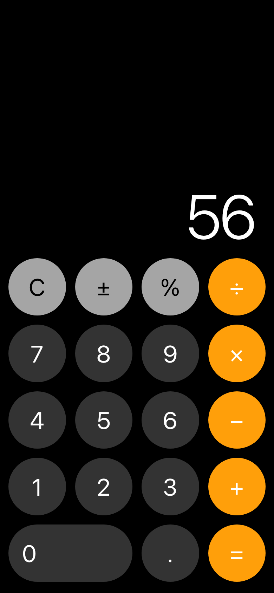
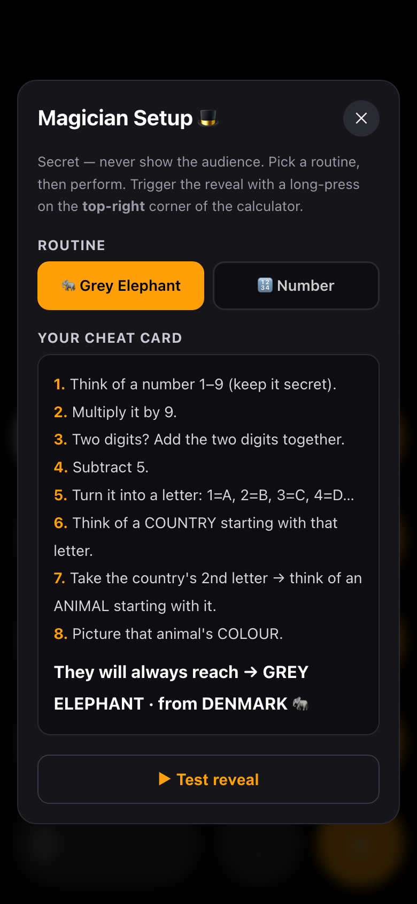
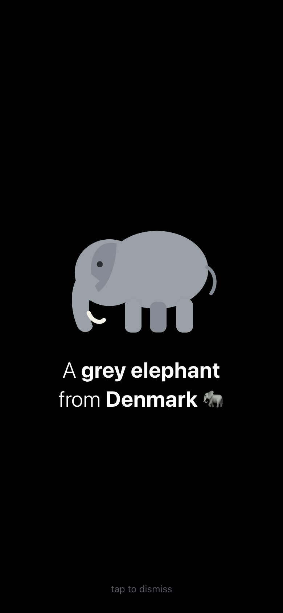
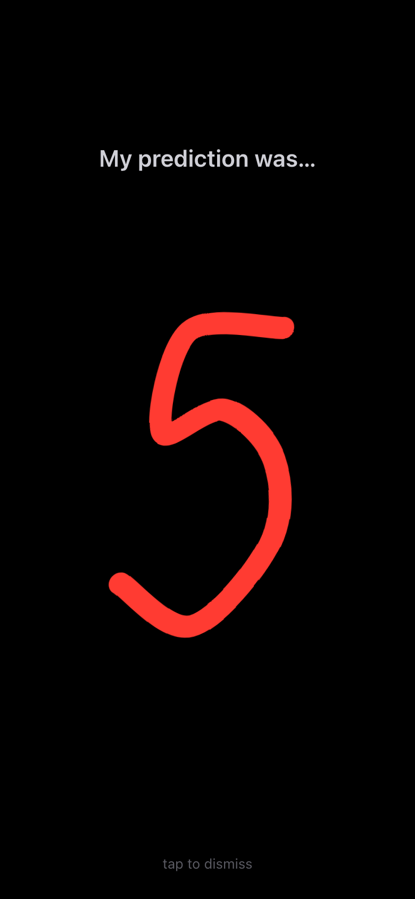

كيف تستخدم التطبيق خطوة بخطوة، بالصور الحقيقية للشاشة

افتح التطبيق — يبدو ويعمل كأي آلة حاسبة. ابدأ بعملية حقيقية أمام الجمهور (٧ × ٨ = ٥٦) ليطمئنوا أنها عادية، ثم ابدأ الخدعة.

اضغط مطوّلًا (~٠٫٧ث) على الزاوية العلوية اليسرى ⚙ لتفتحها. اختر الوضع (فيل / رقم) وراجع بطاقة الغش. سرية — لا تظهر للجمهور.

بعد أن يفكّر الجمهور (يصلون إلى «فيل رمادي من الدنمارك»)، اضغط مطوّلًا (~٠٫٥ث) على الزاوية العلوية اليمنى ✨ فيظهر الكشف.

في وضع الرقم تُرسم «نبوءتك» بخط اليد (٥ / ٧ / ١٠). المس أي مكان على الشاشة لإخفاء الكشف والعودة للآلة.
افتح الرابط في سفاري واضغط زر المشاركة بالأسفل.
اختره، سمِّه «Calculator»، ثم Add.
يعمل بكامل الشاشة كآلة حاسبة حقيقية بلا شريط متصفح.